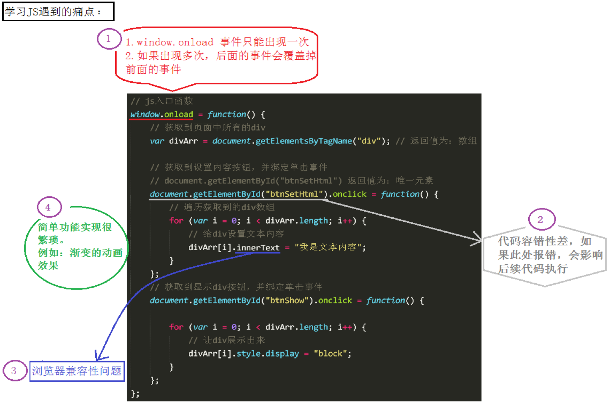

两者相同: 内嵌，外链，行内三种代码放置位置。
2. 怎么将指定的html标签与我们指定的的css样式/js行为代码关联在一起行内就不存在这个问题了
两步:
| CSS | JavaScript | ||
|---|---|---|---|
| 原生JS — BOM/DOM | jQuery框架 | ||
| 获取到HTML标签 |
格式： 选择器名 { 样式 } |
格式： document.getElementByTag/Id("类/标签/id") |
格式： 前三种：$("选择器名") //选择器名与CSS中一样 最后一种：是作为jQuery对象的方法存在的 |
| 绑定CSS样式/JS行为 | css直接在选择器后面接大括号，直接写样式 | 给标签的事件属性 赋值 事件驱动程序：.onclick = fn; 或者 addevent | 标签调用方法，事件驱动程序作为参数，传入 |
| 写代码: API/以及用途 | css: 给html标签设置样式 |
DOM/BOM: 对节点进行查改增删 核心：DOM/BOM对象 相关API作为节点对象属性、方法存在 节点对象属性几乎与html标签的属性一直 |
jQuery: 对DOM/BOM代码封装，对节点进行查改增删 核心：jQuery对象 相关API作为jQuery对象方法存在 |
学习JS的遇到的痛点总结：
jQuery就是为了解决这几件事，而设计出来的。
jQuery的学习网站官网：http://jquery.com/
在线API：http://api.jquery.com/
汉化：http://www.css88.com/jqapi-1.9/ (很全很实用)
版本介绍（了解）注：v1.11.3和v2.1.4是两个大版本的最新版。两个版本的区别：2.x版本，不再支持IE6、7、8
这几天主要学习1.11.1版本，1.11.1是目前较为稳定的一个版本，有两个文件：带min/不带min标识：
min：压缩版，压缩过后，体积会更小
压缩指的是：把注释、空格、换行全部去掉，把变量名称尽可能的换成更加简短的字符。
压缩的主要目的：就是让文件变的更小。
平时开发过程中，这两个文件使用哪个都可以；但是，项目上线的时候，推荐使用压缩版。
jQuery是别人封装好的一个js库，免费开源易用，封装了开发中常用到的操作DOM的API，解决了我们使用js操作DOM常遇到的一些问题（兼容性、繁琐等），并且统一的入口，简化我们的操作，让我们更专注于业务！
animate.js(JQurey.js)是我们自己封装的库，而jQuery是别人帮我们封装好的库。(一个一万多行的库)
jQuery框架内容jQuery做的事与DOM是一样的：对节点进行增删改查。
代码上：jQuery主要做了几件事：
1. 为BOM的顶级对象window增加了一些属性和方法
比如：jQuery最核心的$(jQuery)方法其实是window的方法，window省略了而已
2. 创造出了jQuery对象，封装JS原生里面常用的功能性代码，作为jQuery对象的属性和方法。(几乎全都是对象的方法)
jQuery对象概述：
从字面量上来看，jQuery对象是数组，前面先排JS元素节点对象，后面还有一些context,selector,prevObject
注意：
1. 后面这几个元素是不记在jQuery对象的长度里的，jQuery对象里有几个js元素节点，jQuery对象也就是数组长度就是几。所以也可以随便遍历使用。
2. 两种对象本质是截然不同的，字面量一个是JSON，一个是数组，两者各自只能用各自的属性和方法。
jQuery中，所有的方法都必须要jQuery对象来调用，有返回值的，返回的也是个jQuery对象
jQuery两大特性1.链式编程
我们可以在一行代码中调用几个方法：
比如：jQdiv.show(3000).html(1111);
原理：每一个没有返回值的方法，本质上都会：return this;
应用：
当后面一系列方法都是无返回值的方法：因为此时底层会return this，所以方法会一直调用下去。
当后面一系列方法中有个有返回值的
两种情况：
如果中间这个方法返回值是jQuery对象，比如：find("li")
如果你想用这个find的返回值，那就不用动，因为它必然也是jQuery对象，所以肯定可以接着向下运行
但是你不想用这个对象，还想用前一个，在这个方法后面加一个 .end()方法
如果中间这个方法返回值是个字符串，比如：css("background")，那就真的没办法了，彻底断了
2.隐式迭代(迭代在这里不是指更新，而是指重复循环遍历)
隐式 对应的是 显示，隐式迭代的意思是：内部进行循环遍历，而不用我们自己再进行循环，简化我们的操作，方便我们调用。
简单来说：jQuery对象里面如果有几个节点对象，后面进行的操作，对每个节点对象都做一遍
比如：
1. 调用css进行赋值，是数组里的节点对象循环一遍，全部赋值
2. 调用jQuery方法：里面的节点对象，全部转为jQuery对象，调用一遍
比如：$(“ul”).children().find(“li”)。这个find方法，经实验，children()方法返回的jQuery对象里面盛放的所有的子节点对象，都调用了find。
jQuery：如果获取的是多元素的值，大部分情况下返回的是第一个元素的值。
js入口函数：
window.onload = function() {};
jQuery入口函数有三种形式：
$(window).ready(function () {...})
$(document).ready(function () {...})
$(function () {...})
区别一：书写个数不同
Js入口函数只能出现一次，出现多次会存在事件覆盖的问题。
jQuery的入口函数，可以出现任意多次，并不会存在事件覆盖问题。
区别二：执行时机不同
Js入口函数是在所有的文件资源加载完成后，才执行。这些文件资源包括：页面文档、外部的js文件、外部的css文件、图片等。
jQuery的入口函数第一个同JS，其他两个都是在文档加载完成后，就执行。文档加载完成指的是：DOM树加载完成后，就可以操作DOM了，不用等到所有的外部资源都加载完成。
文档加载的顺序：从上往下，边解析边执行。
$是jQuery中一个非常重要的方法
$方法 === jQuery方法$函数，根据传入参数的不同，进行不同的调用，实现不同的功能。
如果参数是字符串：
字符串为选择器，查找标签： $("ul .box")
字符串有html标签符号，创建标签： var newjq = $("<li>我是li</li>") //封装的document.creatElement("li")
如果参数是JS对象：转js对象为jQuery对象
如果参数是function方法：入口函数
jQuery使用$符号原因：书写简洁、相对于其他字符与众不同、容易被记住。
js提供的选择DOM的方法太少了，只有四五个，满足不了我们平时开发的需要，所以，我们可以使用强大的jQuery选择器来弥补这方面的不足。
强大的原因：jQuery实现了从CSS1到CSS3所有的选择器以及其他常用的选择器。
各种选择器之间可以相互代替，所以，平时真正用到的只是最常用的选择器。
jQuery里的选择器种类很多，我们这里主要讲三种：
基本/层级的形式都是：$("选择器名字")。而且选择器名字写法与选择规则几乎与CSS中的选择器名字一模一样，所以这里就不说了
基本过滤选择器用法与CSS中的伪类写法一样，是写在标签的后面，表示各自的含义
注意：checked/disabled/selected三个奇葩属性又来了这三个家伙，在DOM-改属性模块，就跟人不一样。
在jQuery-改属性还跟人不一样
现在，查找标签，它们三个又很突出，言归正传。
语法：
$("input:checked/disabled") //多选框，点击之后，check属性生效，标签里是没反应的
$("select option:selected") //下拉列表，选择之后，option的selected属性生效，标签里没反应
作用：
查找标签中是这几个状态的标签
语法：
var jQuery对象 = $(DOM对象);
比如：
$(document）.ready(function(){}); // 调用入口函数
此处是将document这个js的DOM对象，转换成了jQuery对象，然后才能调用jQuery提供的方法：ready
jQuery对象转换成DOM对象：第一种方式：
jQuery对象[index] （推荐使用此方式）
第二种方式：
jQuery对象.get[index];
jQuery对JS原生代码的封装，几乎都是作为jQuery对象的方法存在的。我们在这里以这些方法的用途来分开讲：
jQuery对象的所有方法都是jQuery对象来调用(废话..)，而且有返回值的方法，返回值几乎都是jQuery对象
不好归类查改增删的方法有输入框的input标签特有的两个方法：
focus() 让元素获取光标
select() 让标签选中文本框内容
这两个方法DOM对象、jQuery对象都能调用，一模一样
查找父元素.不用带参数，就算带参数，也只能是自己父盒子满足的一些参数
查找指定元素的直接子元素（亲儿子元素），可以有参数，没参数就表示所有子元素
查找指定元素的所有后代元素（子子孙孙），必须有参数，否则什么都没有
查找所有兄弟元素（不包括自己），可以有参数，没参数就表示所有兄弟元素
查找该jQuery对象数组中第index个元素，index是索引号，从0开始，eq(index)返回的是[索引]返回的节点对象 转化成的jQuery对象
当前jQuery对象在父元素中的索引值，与上面的方法相辅相成
html标签的属性
在DOM中，是通过DOM对象的属性来取值/赋值的
两种方法：
1.操作标签对应的DOM对象属性，会反映到标签上：.属性/["属性"]
2.DOM-API直接操作标签：set/get/removeAttribute("")
在jQuery中是作为jQuery对象的方法来取值/赋值的
一种方法：
jQuery-API直接操作标签：attr()/removeAttr()
注意：修改标签对应的jQuery对象的属性，跟标签一毛钱关系都没有
作用：赋值或获取标签的内容，识别标签
获取操作
不带参数
获取元素内所有内容，如果有子元素，html标签符号+文本内容，一并取出
设置操作
带参数
如果参数中，有html标签符号，会转化生成为html标签，显示出来
作用：设置或获取匹配元素的文本内容，不识别标签
获取操作
不带参数
获取元素的文本内容，如果元素还有子元素，只取子元素里的文本内容(不取html标签符号)
设置操作
带参数，参数表示要设置的文本内容
如果参数里，有html标签符号，依旧直接赋值。不会转换生成为html标签
作用：设置或返回表单元素的值，例如：input,select,textarea的值
带参数是赋值，不带参数是取值
宽高作用：设置或获取匹配元素的高度值
用法：
带参数表示设置高度，参数可以加px，也可以不加，推荐不加
不带参数获取高度
作用：设置或获取匹配元素的宽度值
用法：同上
前者返回的是number类型，比如：20
后者返回的是string类型，比如：20px
前者常用于计算
属性操作$(selector).attr(“name”, “value”);
$(selector).attr(“name”);
$(selector).removeAttr(“name”);
checked、selected、disabled要使用.prop()/removeProp()方法，用法同attr()。attr()方法虽然也可以使用，但是是一次性的。
prop方法通常用来影响DOM元素的动态状态，而不是改变的HTML属性。例如：input和button的disabled特性，以及checkbox的checked特性。
同DOM，一是直接修改，二是改变类名
.css()方法直接修改作用：设置或获取元素的样式属性值
用法：参数个数与类型不同，方法的意思是不同的
两个字符串做参数：
设置单个样式：
第一个参数表示：样式属性名称
第二个参数表示：样式属性值
$(selector).css(“color”, “red”);
一个JSON做参数：
设置多个样式：（也可以设置单个）
参数为 {}（对象）
$(selector).css({“color”: “red”, “font-size”: “30px”});
一个字符串做参数
获取样式值
参数表示要获取的 样式属性名称
$(selector).css(“font-size”);
此时，会返回”font-size”样式属性对应的值。带px单位，底层应该是style取值
如jQuery对象调用时，字面量里有>1个元素节点对象，是取第一个元素节点调用，此时没有隐式迭代特性
修改类名为指定元素添加类className
为指定元素移除类：（没有这个类，移除也不会错，内部做了优化）
如果不指定参数，表示移除被选中元素的所有类
判断指定元素是否包含类className
返回值: true或false
为指定元素切换类，该元素有类则移除，没有指定类则添加。
操作类样式的时候，所有的类名，都不带点（.）
经验：1 操作的样式非常少，那么可以通过.css()这个 方法来操作
2 操作的样式很多，那么要通过使用类的方式来操作
3 如果考虑以后维护方便（把CSS从js中分离出来）的话，推荐使用类的方式来操作。类比CSS书写位置（把css从html中分离出来）
jQuery的事件机制，指的是：jQuery对JavaScript操作DOM事件的封装，包括了：事件绑定、事件解绑、事件触发。事件类型、名字与js一样，绑定的时候不带on
jQuery事件绑定方法的发展历程简单事件绑定 >> bind事件绑定 >> delegate事件绑定 >> on【重点】
这四种绑定方式，各自之间、相互之间都不会层叠掉
注意：jQuery对象绑定事件的时候，function里面的this是指的DOM对象，不是jQuery对象
简单事件绑定绑定语法：
jQuery对象.click(function(){...}) //事件名不带on,事件驱动程序做参数
bind方式（不推荐，1.7以后的jQuery版本被on取代）绑定语法：
jQuery对象.bind("click mouseenter", function(){...})
优化：比简单事件绑定方式的优势：可以同时绑定多个事件
delegate方式（特点：性能高，支持动态创建的元素）绑定语法：
父系元素jQuery对象.delegate("selector要绑定的元素","click mouseleave",data,function(){...})
最现代的方式，兼容zepto(移动端类似jQuery的一个库)，强烈建议使用的方式（重点）
jQuery1.7版本后，jQuery用on统一了所有的事件处理的方法
绑定语法：
父系元素jQuery对象.on("click mouseleave","selector要绑定的元素",data,function(){...})
支持动态创建的元素
意思也就是，比如：selector:"ul li". 该办法绑定之后，不但已有的li标签绑定上click事件，该方法之后，如果又创建了li标签，只要满足这个选择器，那么也会绑定上click事件
支持数据传输
data是个对象(不是json串也行，试了一下，键可以不加引号)，在function中，event.data，可以用这个对象
注意：如果有data，那么function方法参数，必须写event，否则绑定失败(delegate、on都是这样)
绑定方式 对应 解绑方式
因为我们绑定的时候不层叠性，所以解绑的时候，下面几个解绑方法，参数里，都可以指定：event,fn(指定解绑什么事件，这个事件的哪个方法)
unbind() 方式作用：解绑 bind方式绑定的事件、简单绑定方式绑定的事件
语法：
.unblind(事件type,fn)
无参数：解绑元素所有的事件
一个参数：
type: 解绑该事件所有的事件驱动程序
只写一个fn参数，无效
两个参数：
type+fn，解绑该事件的该事件驱动程序
undelegate() 方式作用：解绑delegate方式绑定的事件
语法：
.undelegate(selector,types, fn)
off() 方式解绑on方式绑定的事件（重点）语法：
.off(types, selector, fn)
undelegate()/off()方式解绑的注意点：怎么绑定的，怎么解绑调用者：绑定的时候，谁调用的，解绑的时候，也是谁调用。哪怕都是它的父系元素，也不能换调用者。
selector: 绑定的时候，怎么写的，解绑时候怎么写。哪怕最后查找到的元素一模一样，也不能换selector写法。
参数： types+fn的搭配参考unbind
事件方法触发
$(selector).click(); //触发click事件
trigger方法触发事件，触发浏览器行为
$(selector).trigger(“click”);
triggerHandler触发 只执行事件里的代码，不触发浏览器行为
比如:文本框获得焦点的默认行为
$(selector).triggerHandler(“focus”);
| event.data | 传递给事件处理程序的额外数据 |
| event.target | 触发事件源，不一定===this |
| event.type | 事件类型 |
| event.currentTarget | 等同于this，当前DOM对象 |
| event.pageX | 鼠标相对于文档左部边缘的位置 |
| event.stopPropagation()； | 阻止事件冒泡 |
| event.preventDefault(); | 阻止默认行为 |
| event.which | 鼠标的按键类型：左1 中2 右3 |
| event.keyCode | 键盘按键代码，对应的Unicode值 |
类比innerHTML属性
有参数：是赋值
无参数：是取值
语法：
$(selector).html("<li>内容</li>")
推荐使用
语法：
var newjq = $("<li>内容</li>") //创建新节点，返回的是jQuery对象
$("..").append(newjq);
上面两步可以直接缩写为：$("..").append(<li>内容</li>)
$("标签")
类比于js中的document.createElement("li") + 给新创建的节点.innerHTML赋值
语法：
var creatNode = $("<.>内容<.>");
复制标签(只有深层复制)clone()
var cloneNode = $(selector).clone(); //复制调用该方法的节点
添加至父节点在调用方法的元素的最后一个子元素后面追加元素：
如果是页面中存在的元素，那么调用append()后，会把这个元素放到相应的目标元素里面去；但是，原来的这个元素，就不存在了。
如果是给多个目标追加元素，那么方法的内部会复制多份这个元素，然后追加到多个目标里面去。
参数的类型：
htmlString 或者
jQuery对象
DOM对象好像也可以
在我们传进去之后，先调用$方法，对参数进行统一处理，成jQuery对象，然后进行添加操作
作用：同append()，区别是：子元素调用，参数是父元素
作用：在调用方法的元素的第一个子元素前面添加节点
参数：htmlString 或者 jQuery对象，同append()方法
作用：在调用方法的元素之后，作为兄弟元素插入内容或节点
参数：htmlString 或者 jQuery对象，同append()方法
作用：在调用方法的元素之前，作为兄弟元素插入内容或节点
参数：htmlString 或者 jQuery对象，同append()方法
$(selector).empty(); //没有参数
$(selector).html(""); //参数为空字符
"自杀": 把自己（包括所有内部元素）从文档中删除掉$(selector).remove();
推荐使用html(“<span></span>”)方法来创建元素或者html(“”)清空元素
作用：获取或设置元素相对于文档的位置(与元素定位与否无关)
语法：
$(selector).offset();
无参数表示获取，返回值为：{left:num, top:num}，值是相对于document的位置
$(selector).offset({left:100, top: 150});
有参数表示设置，参数推荐使用数值类型
注意点：设置offset后，如果元素没有定位(默认值：static)，则被修改为relative
作用：获取相对于其最近的具有定位的父元素的位置。(与元素定位与否无关)
语法：
$(selector).position();
返回值为对象：{left:num, top:num}
注意：封装的offsetTLeft/offsetTop的值，只能获取，不能设置。
作用：获取或者设置元素垂直方向滚动的位置
语法：
$(selector).scrollTop();
无参数表示获取偏移
$(selector).scrollTop(100);
有参数表示设置偏移，参数为数值类型
作用：获取或者设置元素水平方向滚动的位置
语法：同上
这两个方法，window/document/盒子都可以调用
取值：底部封装的scrollTop/scrollLeft的值
赋值：封装的scrollTop/scrollLeft赋值，以及window.scrollTo(x,y)
jQuery封装的一些动画方法jQuery提供的一组网页中常见的动画效果，这些动画是标准的、有规律的效果；同时还提供给我们了自定义动画的功能。
jQuery预设的三组动画效果的语法几乎一致：四种参数传入方式，fade多了一种
本质上就是操作：宽高、透明度、display样式
|
隐藏显示动画：show()/hide() = toggle() |
淡入淡出动画：fadeIn()/fadeOut() = fadeToggle() |
滑入滑出动画：slideDown()/slideUp() = slideToggle() |
|
| 无参: () | 没有动画效果 | normal的速度：400ms | |
| 一个参数: (毫秒值) | |||
| 一个参数: (速度字符) | slow：600ms、normal：400ms、fast：200ms | ||
| 两个参数: (毫秒值/速度字符,回调) | |||
|
fadeTo(毫秒/字符,透明度,回调) 速度参数必须写 |
|||
执行一组CSS属性的自定义动画
语法：
$(selector).animate({params},speed,callback);
第一个参数表示：要执行动画的CSS属性（必选）
第二个参数表示：执行动画时长（可选）
第三个参数表示：动画执行完后立即执行的回调函数（可选）
动画支持的属性：http://www.w3school.com.cn/jquery/effect_animate.asp
停止动画如果一个以上的动画方法在同一个元素上调用，那么对这个元素来说，后面的动画将被放到效果队列中。这样就形成了动画队列。（联想：排队进站）
前一个动画结束之后，后一个动画才会开始.
$(selector).stop(clearQueue,jumpToEnd);
第一个参数：该元素队列里后面的动画是不是全部清除
第二个参数：该元素当前正在进行的动画，是否立即执行完。
false表示不执行，就停在当前位置。回调函数不执行
true表示立即变成动画的目标状态，回调函数立即执行
都不给，默认false；
常用方式：
$(selector).stop();
1、jquery 获取版本号
2、selector 代表所有实例默认的选择器，也代表实例是一个jQuery类型的对象
3、length 代表所有实例默认的长度
4、toArray 把实例转换为数组返回
5、get 获取指定下标的元素，获取的是原生DOM
6、each 遍历实例，把遍历到的数据分别传给回调使用
7、map 遍历实例，把遍历到的数据分别传给回调使用，然后把回调的返回值收集起来组成一个数组返回
8、slice 截取实例的部分元素，构成一个新的jQuery实例返回。
9、first 获取实例中的第一个元素，是jQuery类型的实例对象。
10、last 获取实例中的最后一个元素，是jQuery类型的实例对象。
11、eq 获取指定下标的元素，获取的是jQuery类型的实例对象。
12、push 给实例添加新元素
13、sort 对实例中的元素进行排序
14、splice 按照指定下标指定数量删除元素，也可以替换删除的元素。
大部分情况下是不需要使用each方法的，因为jQuery的隐式迭代特性。但是如果要对每个元素做不同的处理，这时候就用到了each方法
语法：
$(selector).each(function(index,element){ });
参数一表示当前元素在所有匹配元素中的索引号
参数二表示当前元素（DOM对象）Element是一个 js对象，需要转换成jquery对象
仿照原生JS中: 数组的foreach方法模式封装的.现在在这里，伪数组，真数组都可以调用
使用jQuery中的each方法来遍历对象的时候，我们可以通过return false来跳出循环.
多库共存指的是：
jQuery占用了$ 和jQuery这两个变量。如果该页面已经引用的其他库（或者其他版本的jQuery库）中已经用到了$或者jQuery这两个变量，我们如果再在该页面引用jQuery这个js库，那么$/jQuery就会将以前的搞乱。那么，要保证每个库都能正常使用，这时候就有了多库共存的问题。
解决方式：
如果已存在的库，已经用了$符号，那么让jQuery释放对$的控制权，让其他库使用$符号，此后，只能使用jQuery来调用jQuery提供的方法
语法：
$.noConflict();
无参数：释放对$的控制权
参数为true，$/jQuery都叫出来，有返回值，是一个新的调用方法名，代码$/jQuery
注意：高版本的写在下面，否则可能弃用失败
jQuery这个js库，虽然功能强大，但也不是面面俱到包含所有的功能。
jQuery是通过插件的方式，来扩展它的功能.
第三方插件使用使用步骤：
引入jQuery文件
引入插件
使用插件 -- 看demo：js第三方库，demo一般起名：demo/index/home，有的写在readme里
常用的几个插件jQuery.color.js -- jQuery中的animate()方法是做不了颜色动画的，这个插件补充的就是这个功能
用法：
animate({"background-color": 'transparent'}, 2000); //正常使用animate()方法，如果没有插件，是无效的
jQuery.lazyload.js -- 盒子的懒加载，滑动到哪，加载到哪。(iOS的滑动页面默认就是懒加载)
用法：
导入插件之后
html中：<img class="lazy" data-original="url" width="640">
js中：$("img.lazy").lazyload();
控制台 - network里面可以看哪些元素已经加载
jQuery.fullPage -- 全屏滚动插件（githup上有源码）
用法：
大盒子的ID可以随便取，但是小盒子的类名必须都是section
如果要指定加载页面时显示的“屏幕”，可以在对应的section加上类名active，另外在滚动的时候当前显示的section，类名都会加上active
在script标签中：
$(“#大盒子ID”).fullpage({ //fullpage()是方法，参数是个对象，API看使用文档(或者网上一搜都是)，常用：
sectionsColor: [ ‘’, ‘’, ‘’] //给section设置颜色
anchors:[ ‘’，‘’，‘’ ] //给section设置锚点
afterload: function(当前页面锚链接anchorlink, 当前页面index) {代码}
})
如何创建jQuery插件：http://learn.jquery.com/plugins/basic-plugin-creation/
全局jQuery函数扩展方法：调用的时候是$/jQuery调用
$.pluginName = function() {};
jQuery对象扩展方法：调用的时候是jQuery对象调用
$.fn.pluginName = function() {}; //$.fn 叫做原型，表示jQuery对象
插件命名的默认规范：
插件的命名格式一般为：jquery.插件名.js
插件中方法的名字，一般与插件文件名保持一致，方便使用
jQueryUIjQueryUI专指由jQuery官方维护的UI方向的插件。
官方API：http://api.jqueryui.com/category/all/
其他教程：jQueryUI教程
基本使用:
引入jQueryUI的样式文件
引入jQuery
引入jQueryUI的js文件
使用jQueryUI功能